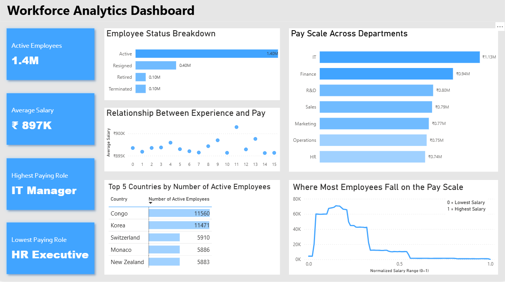
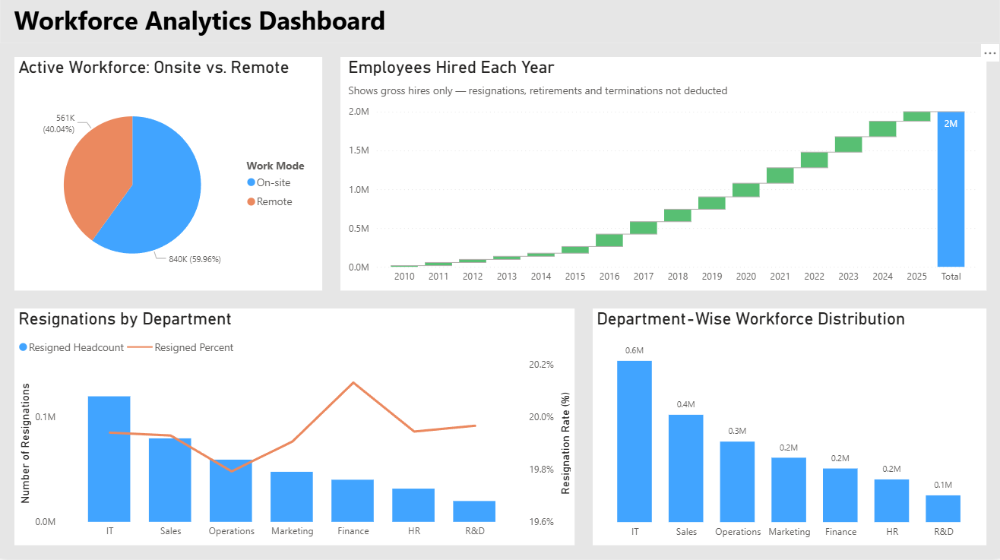

Workforce Analytics Dashboard (Power BI)
Power BI project on a multinational company’s HR data with Power Query for cleaning and transformation, DAX measures and calculated columns for analysis, and interactive dashboards for visualization.
Note: To view the interactive report, open Workforce_Analytics_Dashboard.pbix in this repository.
Dashboard-1: Workforce Overview, Pay Patterns, and Top Countries

Insights
- Employee status is dominated by Active headcount (~1.4M), with Resigned (~0.4M) as the next largest group; Retired and Terminated are comparatively smaller (~0.1M each).
- The overall average salary is ~₹897K.
- IT is the highest-paying department (~₹1.13M), followed by Finance (~₹0.94M), while HR and Operations sit on the lower end (~₹0.74–₹0.75M).
- The dashboard highlights IT Manager as the highest paying role and HR Executive as the lowest paying role.
- Average pay by experience appears fairly stable across 0–15 years, with only modest variation rather than a steep year-by-year climb.
- Active headcount is most concentrated in Congo (11,560) and Korea (11,471), followed by Switzerland (5,910), Monaco (5,886), and New Zealand (5,883).
- The pay distribution is heavily concentrated in the lower portion of the normalized salary range, with a long tail toward the top end (fewer high earners).
Dashboard-2: Work Mode Split, Hiring Trend, Department Mix, and Resignations

Insights
- The active workforce is primarily on-site (~840K / ~60%), with a significant remote (~561K / ~40%) segment.
- Gross hiring shows a steady upward trend from 2010 through 2025, reaching a total of ~2M hires (as shown, resignations/retirements/terminations are not deducted in this view).
- IT is the largest department (~0.6M), followed by Sales (~0.4M) and Operations (~0.3M); R&D is the smallest (~0.1M).
- Resignations (by headcount) are highest in IT, with Sales and Operations also contributing sizable resignation volumes; R&D is lowest.
- Resignation rates are tightly clustered around ~19.7%–20.2% across departments, suggesting broadly similar attrition pressure, with slight variation by team.